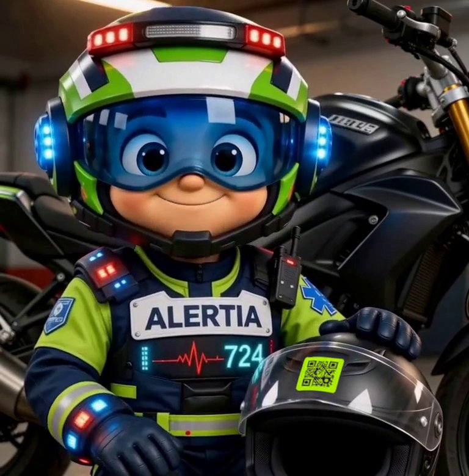

Gratis · Mazatlán · Sinaloa
El chip que salva vidas
Un QR en tu casco que habla por ti cuando tú no puedes: le da al paramédico tus datos médicos y avisa a tu familia en segundos.
Sin appAviso por WhatsAppRespaldado por ambulancias 24/7

Un QR en tu casco que habla por ti cuando tú no puedes: le da al paramédico tus datos médicos y avisa a tu familia en segundos.
Cuando un motociclista queda inconsciente, nadie sabe su tipo de sangre, sus alergias ni a quién llamar. Alertia Biker lo resuelve con el casco, lo único que siempre va contigo.
Llenas tu ficha de emergencia y eliges qué se puede ver. Agregas a tu familia como contacto.
Recibes tu chip QR con código único y lo pegas en la parte trasera del casco. No lleva tus datos impresos.
Cualquier celular abre tu ficha: botón al 911, llamada a tu familia y aviso por WhatsApp con la ubicación.
Tus datos de salud son datos sensibles. Por eso la ficha tiene tres niveles y tú decides qué se muestra.
Tu nombre de pila, botones para llamar al 911 y a tu familia y, si lo autorizas, tu tipo de sangre y una alerta crítica.
Con su código de personal autorizado desbloquea alergias, padecimientos, medicamentos y seguro. Cada acceso y cada intento quedan registrados.
Tu historial de escaneos y la configuración de tu ficha. Puedes editar o borrar tus datos cuando quieras.
Alertia 724 es una empresa mazatleca de ambulancias con atención prehospitalaria 24 horas. Por eso Alertia Biker no es solo un sticker.

Alertín, el héroe de Alertia 724, te acompaña en cada ruta.
Regístrate en cinco minutos y recibe tu chip gratis. Para que tu familia no se entere tarde.
Registrar mi casco